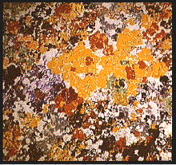
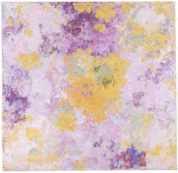

| Giacometti studied art in Zurich, Paris (where he studied the decorative floral style of
William Morris), and Florence. |
| Of particular interest are his paintings motivated by fileds of Alpine flowers pushing through the
snow. |
| Giacometti abandoned traditional representationalism, applying thick blobs of paint to the canvas, producing
paintings that consist of only a distribution of large and small patches of color. |
|  |
 |
 |
|
| These and a series of similar pastels, some painted over a decade before Kandinsky's first abstract
works, are the basis of some art historians' claim that Giacometti was the first abstract painter. |
| In addition, Giacometti painted the entrance hall ceiling of the Zurich Stadtpllizei. Though stylized, these
images exhibit a distribution of smaller and smaller scale details. |
|
| Giacometti certianly had discovered - and expressed - the view that natural scenes are made of ever more copies of
ever smaller details. Without using htis language, he recognized scaling relations and hierarchies in nature. |